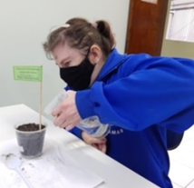
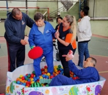
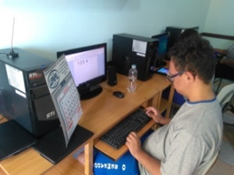

O Semeador
Escola Metodista de Educação Especial
Escola Metodista de Educação Especial
O Projeto Semear é um programa socioassistencial que atende pessoas a partir de 18 anos, oferecendo-lhes recursos e estratégias que visam à convivência, fortalecimento de vínculos, cuidados pessoais, aquisição e a manutenção de habilidades funcionais para a vida, além de atender às necessidades de apoio contínuos estimulando-os, de acordo com os seus interesses e potencialidades, assegurando-lhes aquisição de autonomia e independência nas habilidades básicas de maneira funcional, desenvolvimento de competências sociais e promoção de sua inclusão na comunidade.



O Projeto Semear traz como base os dois pilares que estabelecem os objetivos, princípios e diretrizes da legislação específica da assistência social brasileira, a Constituição Federal de 1988 e a Lei Orgânica da Assistência Social. Atende os princípios legais de Proteção Social Básica por destinar os seus serviços, programas e proteções sociais de acolhimento, convivência e socialização aos adultos com deficiência intelectual, múltiplas deficiências, transtorno do espectro autista e suas respectivas famílias.